X.509 Mutual Authentication
Learn how to implement mutual authentication using SSL and X.509 certificates.
On this guide
In this section
Getting Started
In this guide, we will create a Micronaut application with X.509 authentication written in Java.
What you will need
To complete this guide, you will need the following:
-
Some time on your hands
-
A decent text editor or IDE
-
JDK 17 or greater installed with
JAVA_HOMEconfigured appropriately -
OpenSSL installed
Solution
We recommend that you follow the instructions in the next sections and create the application step by step. However, you can go right to the completed example.
-
Download and unzip the source
X.509 Mutual Authentication
As of Micronaut Security version 3.3, applications can use X.509 client certificates when using SSL to enable mutual authentication, i.e., in addition to the client verifying the server identity with its SSL certificate, the server can verify the client identity with a client certificate.
Create certificates for testing
First, we’ll need a Certificate Authority (CA), an SSL certificate for the server, and an X.509 certificate for each application user who will be using mutual authentication. You can use an existing CA, server certificate, and/or client certificate if you already have them; otherwise create your own as described below.
Create a Certificate Authority (CA)
Start by creating a self-signed CA with OpenSSL:
openssl req -x509 -sha256 -days 365 -newkey rsa:4096 \
-keyout cacert.key -out cacert.pemYou will be asked for a CA password ("PEM pass phrase") and a few values for the CA. Most are optional and are useful for identifying a particular certificate; for our needs only the Common Name (CN) is important though - enter a domain name or other identifying value, e.g., "micronaut.guide.x509":
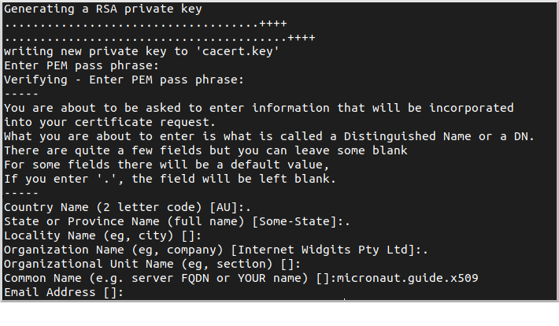
This creates two files: cacert.pem (the CA in PEM format) and cacert.key (the private key).
You can verify and inspect the CA with
openssl x509 -in cacert.pem -text
openssl x509 -purpose -in cacert.pem -inform PEMCreate a Server SSL Certificate
Next we’ll create an SSL certificate for the server. This involves creating a certificate signing request (CSR) and creating the certificate by signing the CSR with the CA we created.
Create a Certificate Signing Request (CSR)
openssl req -newkey rsa:4096 -keyout server.key -out server.csrYou will be asked for a password ("PEM pass phrase") and a few values for the certificate. Enter "localhost" for the Common Name (CN); the rest are optional:
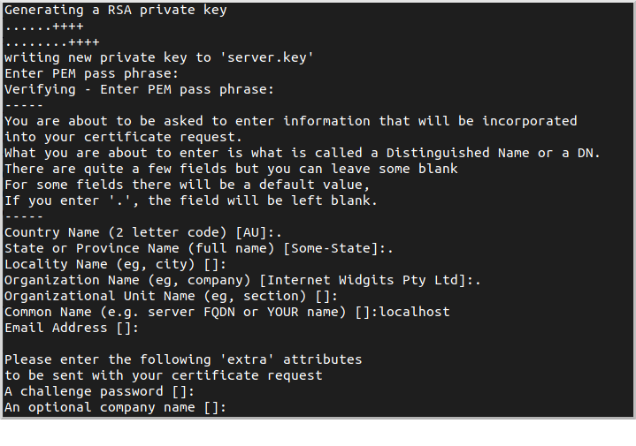
This creates two files: server.csr (the CSR) and server.key (the private key).
You can verify and inspect the CSR with
openssl req -noout -text -in server.csrSign the Server CSR with the CA
Next, sign the CSR with the CA to create the server certificate. Create a configuration file server.conf with this content:
authorityKeyIdentifier=keyid,issuer
basicConstraints=CA:FALSE
subjectAltName = @alt_names
[alt_names]
DNS.1 = localhostand generate the certificate:
openssl x509 -req -CA cacert.pem -CAkey cacert.key \
-in server.csr -out server.pem -days 365 \
-CAcreateserial -extfile server.confYou will be asked for the CA password that you chose earlier. Everything else is provided via the command line or server.conf:
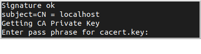
This creates server.pem (the server certificate).
You can verify and inspect the certificate with
openssl x509 -in server.pem -text
openssl x509 -purpose -in server.pem -inform PEMCreate a Keystore Containing the Server Certificate
Create server.p12
Bundle the server certificate and private key in PKCS #12 format:
openssl pkcs12 -export -out server.p12 -name "localhost" \
-inkey server.key -in server.pemYou will be asked for the server certificate password that you chose earlier and a new password ("Export Password") for the PKCS #12 archive:
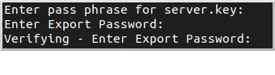
This creates server.p12. You can verify and inspect the archive with
openssl pkcs12 -in server.p12 -noout -infoCreate keystore.p12
Create keystore.p12 containing server.p12 using the keytool utility from your JDK:
keytool -importkeystore -srckeystore server.p12 \
-srcstoretype pkcs12 -destkeystore keystore.p12 \
-deststoretype pkcs12You will be asked for the server.p12 password that you chose earlier and a new password for the keystore:
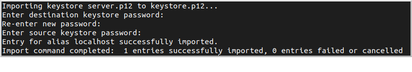
This creates keystore.p12. You can verify and inspect the archive with
openssl pkcs12 -in keystore.p12 -noout -infoCreate a Truststore Containing the CA
Create truststore.jks containing the CA:
keytool -import -trustcacerts -noprompt -alias ca \
-ext san=dns:localhost,ip:127.0.0.1 \
-file cacert.pem -keystore truststore.jksYou will be asked for a new password ("keystore password") for the truststore:
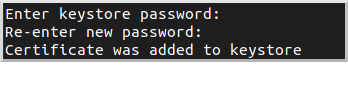
Create a Client X.509 Certificate
Create a Certificate Signing Request (CSR)
Similar to what we did earlier for the server certificate, create a CSR for the client certificate:
openssl req -newkey rsa:4096 -nodes -keyout client.key -out client.csrFor this certificate we’ll skip the password (via the -nodes command line flag), but you can omit the flag and enter a password if you prefer.
Enter a username (e.g., "myusername") for the Common Name (CN); the rest are optional:
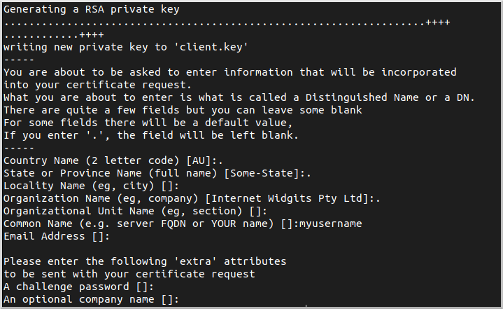
This creates two files: client.csr (the CSR) and client.key (the private key).
You can verify and inspect the CSR with
openssl req -noout -text -in client.csrSign the Client CSR with the CA
Sign the client CSR with the CA:
openssl x509 -req -CA cacert.pem -CAkey cacert.key \
-in client.csr -out client.pem -days 365 -CAcreateserialYou will be asked for the CA password that you chose earlier.
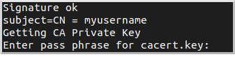
This creates client.pem (the client certificate).
You can verify and inspect the client certificate with
openssl x509 -in client.pem -textCreate client.p12
Bundle the client certificate and private key in PKCS #12 format:
openssl pkcs12 -export -out client.p12 -name "client" \
-inkey client.key -in client.pemYou will be asked for a new password for the PKCS #12 archive:
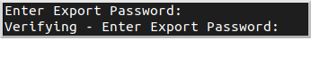
This creates client.p12. You can verify and inspect the archive with
openssl pkcs12 -in client.p12 -noout -infoWriting the Application
Create an application using the Micronaut Command Line Interface or with Micronaut Launch.
mn create-app example.micronaut.micronautguide \
--features=security,reactor,graalvm \
--build=maven --lang=java
If you don’t specify the --build argument, Gradle with the Kotlin DSL is used as the build tool. If you don’t specify the --lang argument, Java is used as the language.If you don’t specify the --test argument, JUnit is used for Java and Kotlin, and Spock is used for Groovy.
|
The previous command creates a Micronaut application with the default package example.micronaut in a directory named micronautguide.
| If you have an existing Micronaut application and want to add the functionality described here, you can view the dependency and configuration changes from the specified features, and apply those changes to your application. |
Copy Certificates
Create the src/main/resources/ssl directory and copy the keystore (keystore.p12) and truststore (truststore.jks) that you created earlier into it.
Configuration
Replace the generated application.properties with this:
HelloController
Create HelloController to test using client X.509 certificates:
Writing Tests
Create a test to verify that X.509 authentication works:
Create application-test.properties in src/test/resources with this content:
Testing the Application
To run the tests:
./mvnw testRunning the Application
To run the application, use the ./mvnw mn:run command, which starts the application on port 8443.
Testing with cURL
You can run some cURL requests to test the application. First, make a request without presenting a client certificate:
curl -i --cacert cacert.pem https://localhost:8443/The output should look similar to this:
HTTP/1.1 200 OK
date: Thu, 28 Oct 2021 01:03:40 GMT
Content-Type: text/plain
content-length: 14
connection: keep-alive
Hello unknown!Next, make a request with a client certificate:
curl -i --cert client.pem --key client.key \
--cacert cacert.pem https://localhost:8443/The output should look similar to this:
HTTP/1.1 200 OK
date: Thu, 28 Oct 2021 01:05:25 GMT
Content-Type: text/plain
content-length: 63
connection: keep-alive
Hello myusername (X.509 cert issued by CN=micronaut.guide.x509)Testing with a Web Browser
To make requests in a web browser, you must import the CA and the client certificate into the browser.
Import Certificates Into Firefox
To do this in Firefox, navigate to about:preferences#privacy and scroll down to the Certificates section, then click "View Certificates":
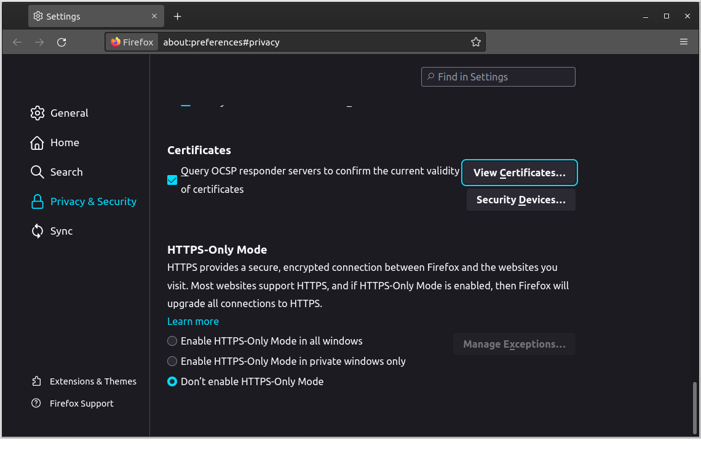
Go to the "Authorities" tab and click "Import…":
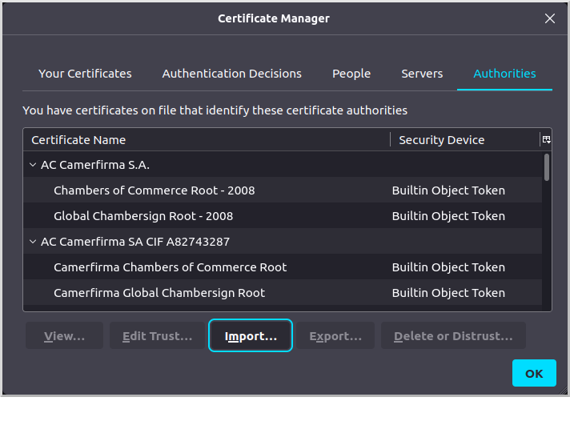
Navigate to the cacert.pem CA certificate you created earlier and import it. Check the "Trust this CA to identify websites" checkbox and click OK:
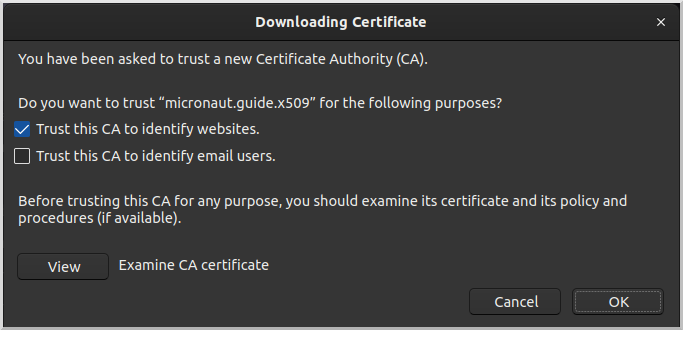
The CA will appear as a "Software Security Device" under "micronaut.guide.x509":
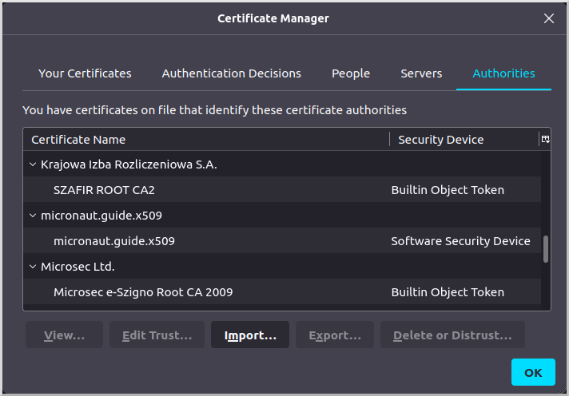
Go to the "Your Certificates" tab and click "Import…":
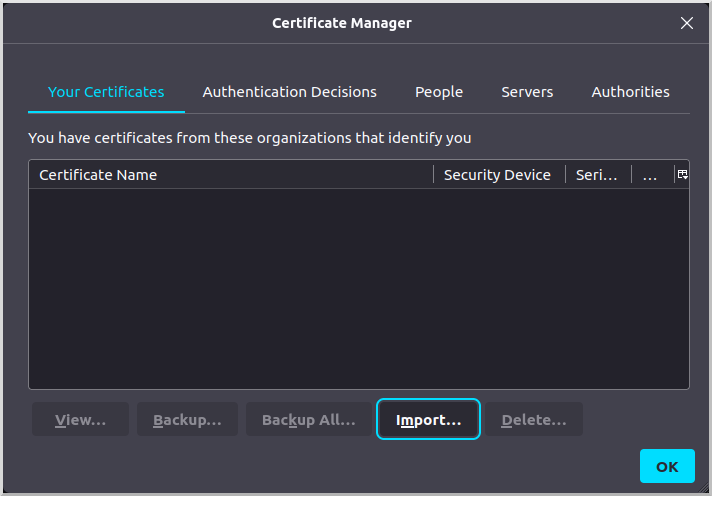
Navigate to the client.p12 archive you created earlier and import it. The certificate will appear as a "Software Security Device" under "myusername":
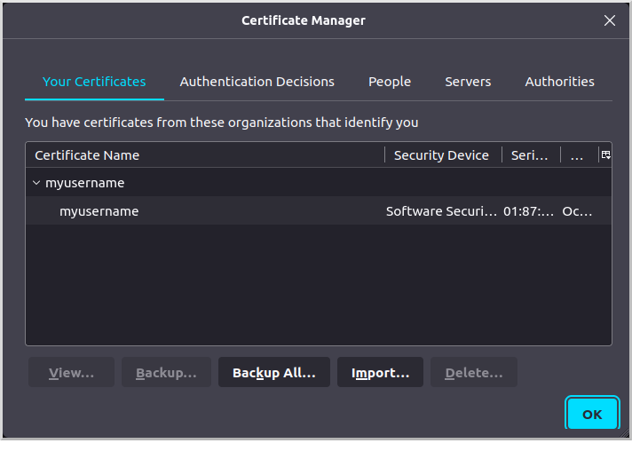
Import Certificates Into Chrome
To do this in Chrome, navigate to chrome://settings/certificates and go to the "Authorities" tab, then click "Import":
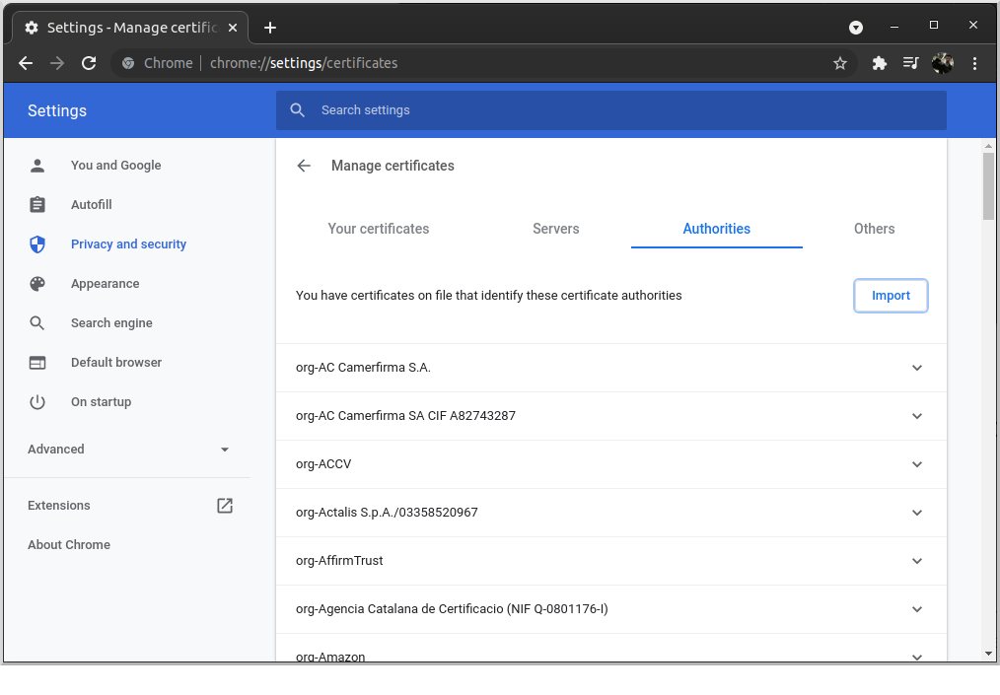
Navigate to the cacert.pem CA certificate you created earlier and import it. Check the "Trust this certificate for identifying websites" checkbox and click OK:
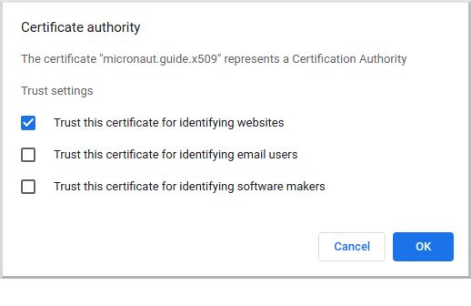
The CA will appear under "org-micronaut.guide.x509":
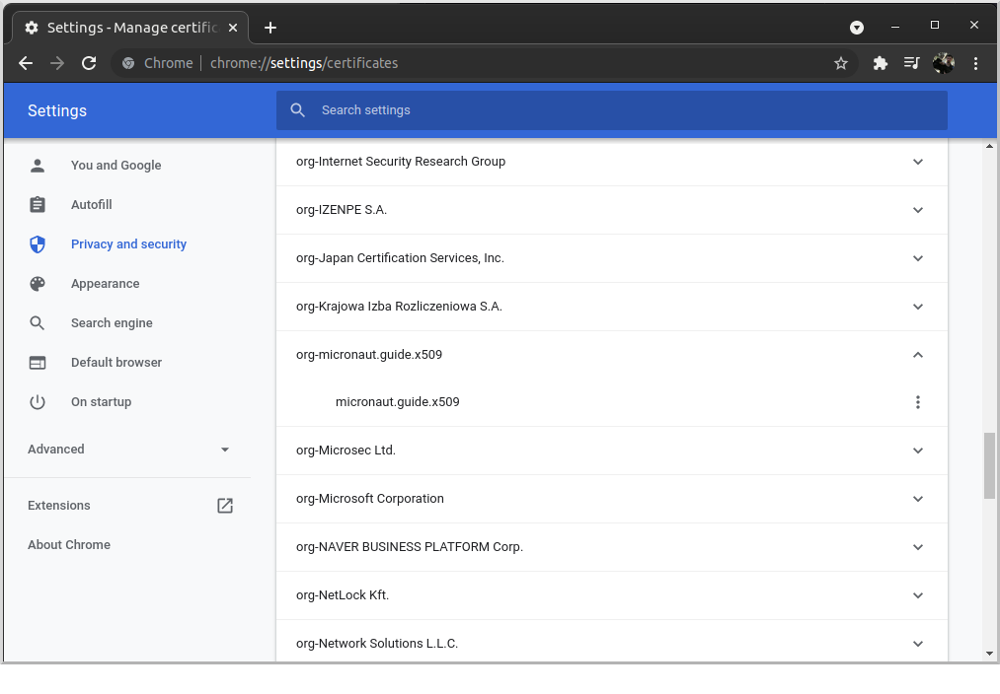
Go to the "Your certificates" tab and click "Import…":
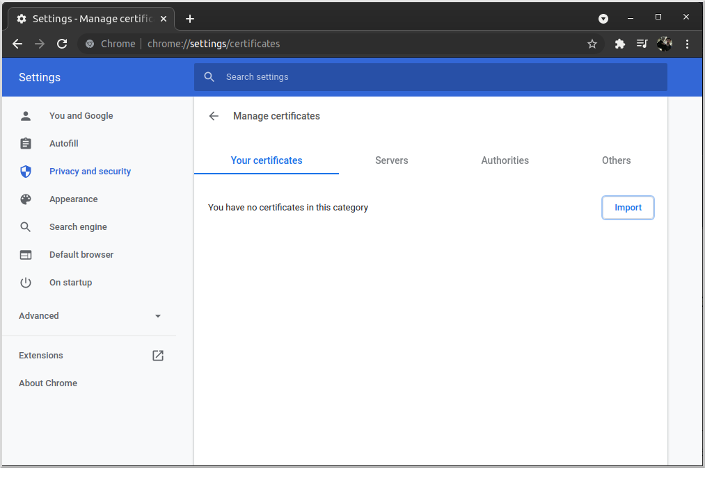
Navigate to the client.p12 archive you created earlier and import it. The certificate will appear under "org-myusername":
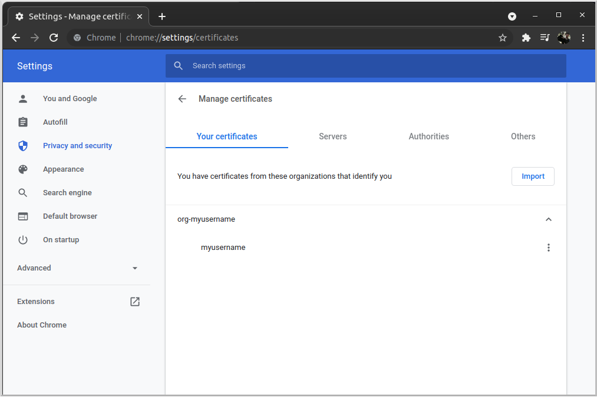
Make a secure request
Navigate to https://localhost:8443 and choose the client certificate you imported earlier when prompted. The response should look like this:
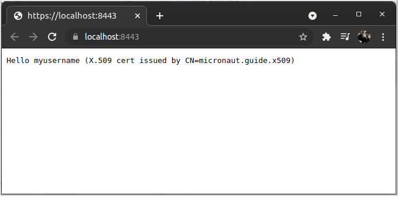
Generate a Micronaut Application Native Executable with GraalVM
We will use GraalVM, an advanced JDK with ahead-of-time Native Image compilation, to generate a native executable of this Micronaut application.
Compiling Micronaut applications ahead of time with GraalVM significantly improves startup time and reduces the memory footprint of JVM-based applications.
Only Java and Kotlin projects support using GraalVM’s native-image tool. Groovy relies heavily on reflection, which is only partially supported by GraalVM.
|
GraalVM Installation
sdk install java 25.0.2-graalFor installation on Windows, or for a manual installation on Linux or Mac, see the GraalVM Getting Started documentation.
The previous command installs Oracle GraalVM, which is free to use in production and free to redistribute, at no cost, under the GraalVM Free Terms and Conditions.
Alternatively, you can use the GraalVM Community Edition:
sdk install java 25.0.2-graalceNative Executable Generation
To generate a native executable using Maven, run:
./mvnw package -Dpackaging=native-imageThe native executable is created in the target directory and can be run with target/micronautguide.
It is possible to customize the name of the native executable or pass additional build arguments using the Maven plugin for GraalVM Native Image building. Declare the plugin as follows:
Run the native executable and repeat the cURL calls and browser request that you made earlier.
Next Steps
Explore more features with Micronaut Guides.
Also check out Micronaut ACME, a convenient way to configure and refresh SSL certificates using Automatic Certificate Management Environment (ACME).
License
| All guides are released with an Apache License 2.0 for the code and a Creative Commons Attribution 4.0 license for the writing and media (images). |